NQ=F 線性空
每筆交易兩張圖：上面一分K，下面一小時K（Yahoo 原生、整點對齊、不切半根）。一分圖灰線是已收盤小時收盤。
30d · 2026-10-04 18:10 → 2026-11-03 11:22 ET · bars=29661
多頭排列創四小時高 → 回測MA10不過高 → 破MA20做空（不追一根灌穿MA30的長黑）。峰距MA200至少 100 點。停損四小時高，摸到MA120移保本；停利 MA200 / 靠近長下影。
筆數23
勝率69.6%
總點數+892.0
勝/負16/7
be 1筆 +0.0 · ma200 8筆 +679.8 · stop 6筆 -249.5 · wick 8筆 +461.8 · 1 口約 +17725 USD（含來回佣 5）
漏斗：創4H高 132 → 回測MA10 132 → 破MA20 83 → 進場 23（距不夠 53 · 長黑穿MA30 6 · 破排列取消 0 · 再創高取消 49）
stop1m1h峰距 211
entry 31168.75
stop 31229.50 （風險 60.8 pts）
exit 31229.50 stop
4H高 31229.50 @ 10-05 09:45 MA200當時 31018.89
回測MA10 @ 10-05 09:46
進場 MA5 31173.3 / MA10 31181.2 / MA20 31175.3
MA60 31070.1 / MA200 31025.7
1H 30995.50 / 1H MA20 —
stop1m1h峰距 190
entry 31211.00
stop 31247.75 （風險 36.8 pts）
exit 31247.75 stop
4H高 31247.75 @ 10-05 10:26 MA200當時 31057.98
回測MA10 @ 10-05 10:28
進場 MA5 31223.2 / MA10 31227.7 / MA20 31213.6
MA60 31181.8 / MA200 31063.8
1H 31155.50 / 1H MA20 —
一小時K（整點對齊，完整小時棒）
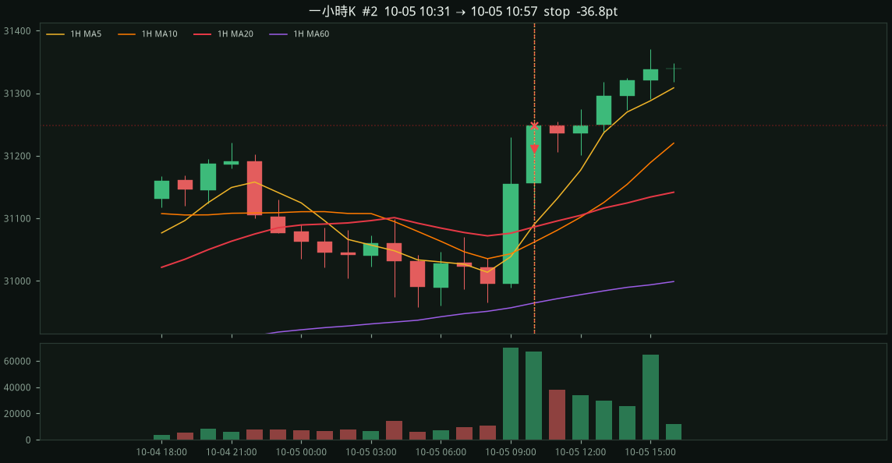
stop1m1h峰距 115
entry 31500.25
stop 31535.75 （風險 35.5 pts）
exit 31535.75 stop
4H高 31535.75 @ 10-06 07:26 MA200當時 31420.38
回測MA10 @ 10-06 07:28
進場 MA5 31509.5 / MA10 31510.8 / MA20 31511.3
MA60 31471.8 / MA200 31426.2
1H 31443.25 / 1H MA20 31342.66
一小時K（整點對齊，完整小時棒）
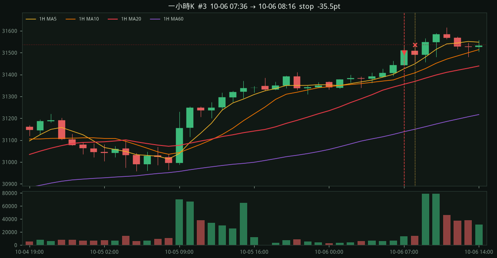
be1m1h峰距 119
entry 31346.00
stop 31373.00 （風險 27.0 pts）
exit 31346.00 be
4H高 31373.00 @ 10-07 11:52 MA200當時 31253.83
回測MA10 @ 10-07 11:53
進場 MA5 31354.9 / MA10 31358.2 / MA20 31348.0
MA60 31297.9 / MA200 31256.0
1H 31253.50 / 1H MA20 31414.97
一小時K（整點對齊，完整小時棒）
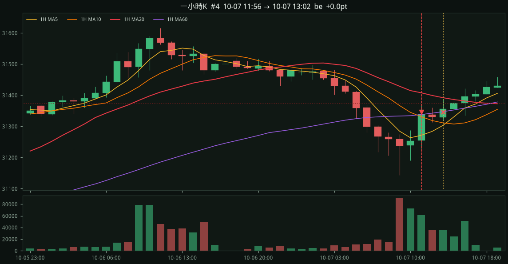
wick1m1h峰距 162
entry 31318.50
stop 31369.75 （風險 51.2 pts）
exit 31246.50 wick
4H高 31369.75 @ 10-08 10:29 MA200當時 31207.88
回測MA10 @ 10-08 10:31
進場 MA5 31331.4 / MA10 31336.5 / MA20 31330.7
MA60 31261.3 / MA200 31217.3
1H 31191.75 / 1H MA20 31318.16
一小時K（整點對齊，完整小時棒）
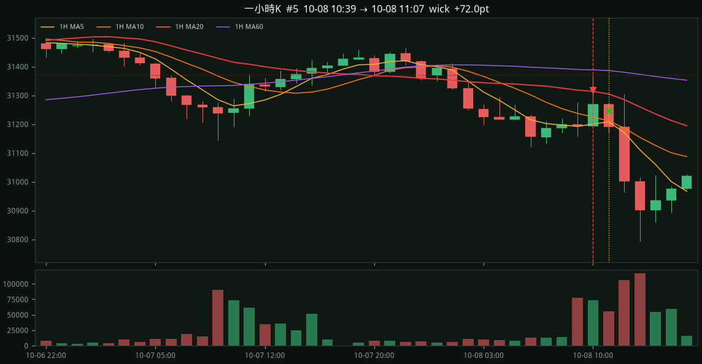
ma2001m1h峰距 136
entry 31264.75
stop 31289.25 （風險 24.5 pts）
exit 31203.50 ma200
4H高 31289.25 @ 10-11 19:34 MA200當時 31152.97
回測MA10 @ 10-11 19:40
進場 MA5 31272.3 / MA10 31275.6 / MA20 31272.0
MA60 31226.7 / MA200 31161.9
1H 31185.75 / 1H MA20 31142.96
一小時K（整點對齊，完整小時棒）
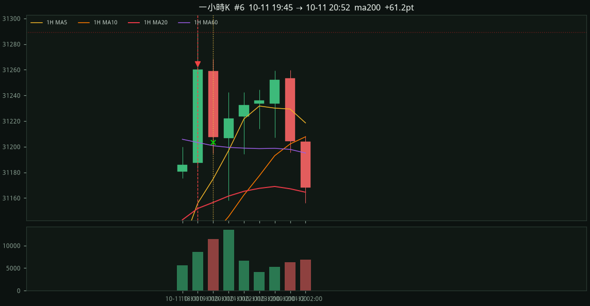
wick1m1h峰距 239
entry 29998.00
stop 30061.75 （風險 63.8 pts）
exit 29937.50 wick
4H高 30061.75 @ 10-15 11:15 MA200當時 29823.06
回測MA10 @ 10-15 11:18
進場 MA5 30014.8 / MA10 30025.3 / MA20 30009.2
MA60 29923.6 / MA200 29831.3
1H 29970.75 / 1H MA20 29906.24
一小時K（整點對齊，完整小時棒）
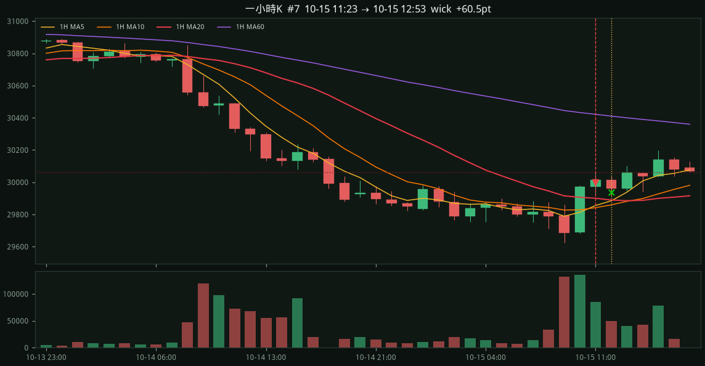
ma2001m1h峰距 140
entry 30060.00
stop 30102.25 （風險 42.2 pts）
exit 29990.75 ma200
4H高 30102.25 @ 10-15 13:42 MA200當時 29962.31
回測MA10 @ 10-15 13:47
進場 MA5 30066.2 / MA10 30069.5 / MA20 30062.7
MA60 30010.1 / MA200 29976.2
1H 29961.75 / 1H MA20 29889.12
一小時K（整點對齊，完整小時棒）
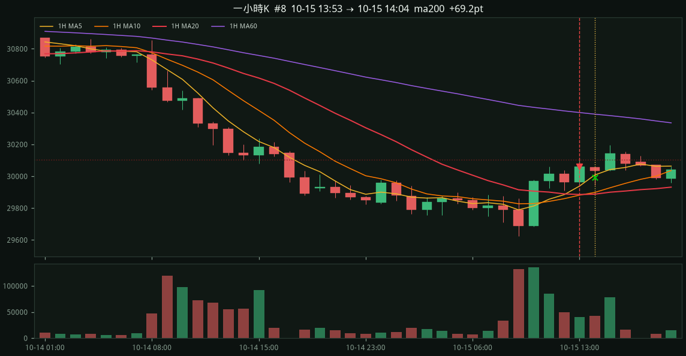
stop1m1h峰距 185
entry 29603.25
stop 29636.50 （風險 33.2 pts）
exit 29636.50 stop
4H高 29636.50 @ 10-18 19:30 MA200當時 29451.30
回測MA10 @ 10-18 19:33
進場 MA5 29605.2 / MA10 29610.3 / MA20 29603.7
MA60 29597.8 / MA200 29464.5
1H 29616.50 / 1H MA20 29883.25
一小時K（整點對齊，完整小時棒）
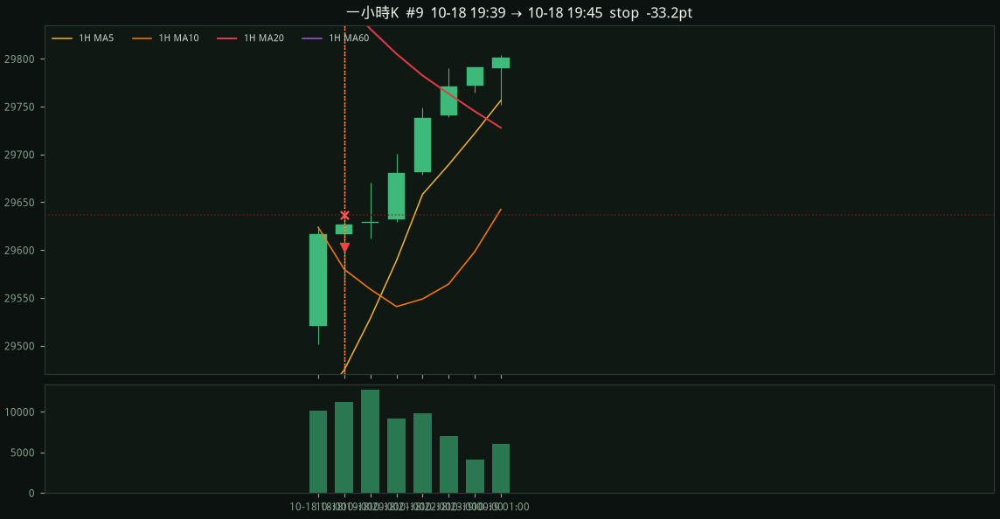
ma2001m1h峰距 183
entry 29956.00
stop 29983.50 （風險 27.5 pts）
exit 29838.50 ma200
4H高 29983.50 @ 10-19 11:37 MA200當時 29800.21
回測MA10 @ 10-19 11:40
進場 MA5 29964.0 / MA10 29968.4 / MA20 29960.3
MA60 29902.3 / MA200 29809.6
1H 29841.75 / 1H MA20 29672.47
一小時K（整點對齊，完整小時棒）
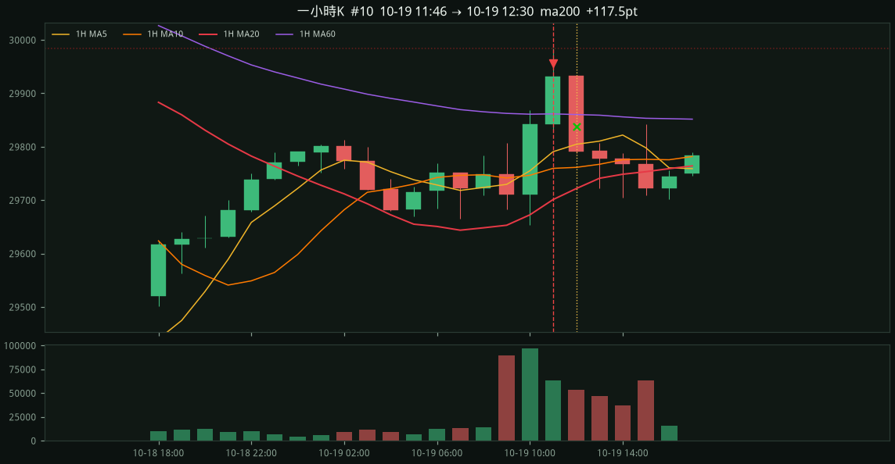
ma2001m1h峰距 326
entry 29838.00
stop 29903.50 （風險 65.5 pts）
exit 29712.75 ma200
4H高 29903.50 @ 10-20 10:30 MA200當時 29577.96
回測MA10 @ 10-20 10:33
進場 MA5 29849.4 / MA10 29849.2 / MA20 29850.9
MA60 29733.5 / MA200 29602.9
1H 29627.25 / 1H MA20 29678.17
一小時K（整點對齊，完整小時棒）
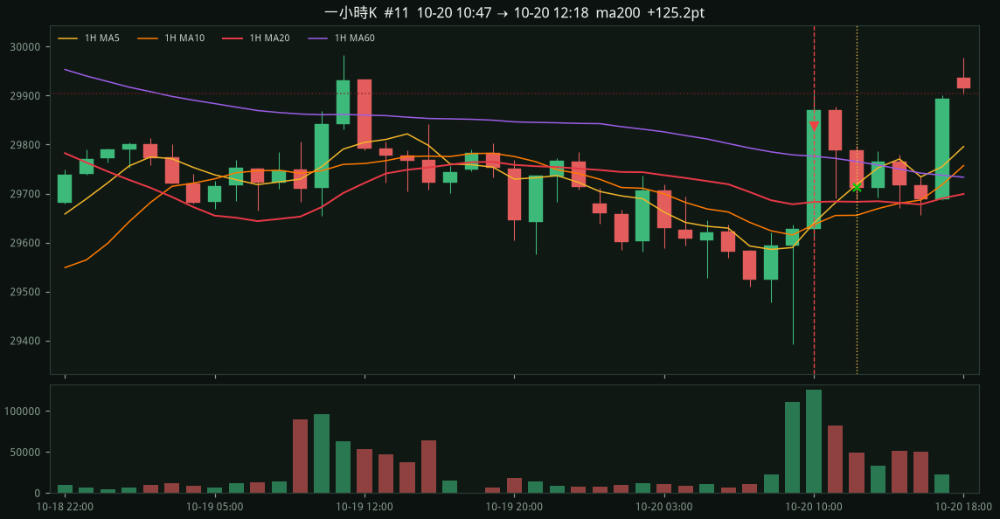
ma2001m1h峰距 113
entry 29984.00
stop 30010.25 （風險 26.2 pts）
exit 29918.25 ma200
4H高 30010.25 @ 10-20 20:41 MA200當時 29897.00
回測MA10 @ 10-20 20:43
進場 MA5 29991.7 / MA10 29995.2 / MA20 29990.6
MA60 29943.5 / MA200 29905.2
1H 29905.25 / 1H MA20 29706.17
一小時K（整點對齊，完整小時棒）
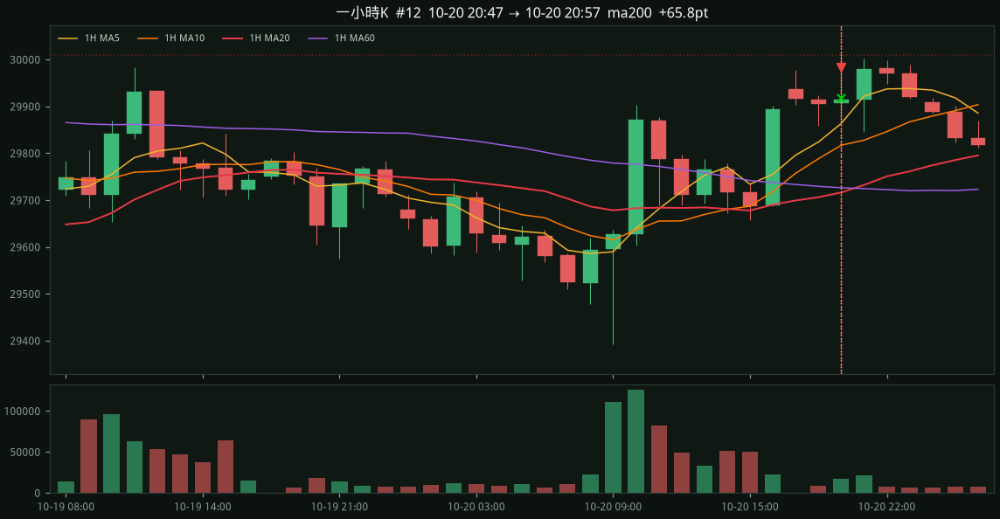
wick1m1h峰距 135
entry 30089.75
stop 30113.00 （風險 23.2 pts）
exit 30069.00 wick
4H高 30113.00 @ 10-21 13:21 MA200當時 29977.93
回測MA10 @ 10-21 13:22
進場 MA5 30101.4 / MA10 30101.3 / MA20 30094.6
MA60 30060.8 / MA200 29980.7
1H 30069.25 / 1H MA20 29897.88
一小時K（整點對齊，完整小時棒）
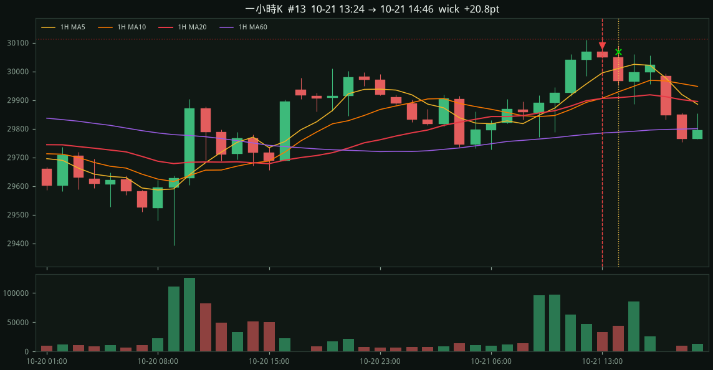
wick1m1h峰距 216
entry 29280.00
stop 29326.00 （風險 46.0 pts）
exit 29215.75 wick
4H高 29326.00 @ 10-23 10:53 MA200當時 29110.17
回測MA10 @ 10-23 10:55
進場 MA5 29285.2 / MA10 29295.2 / MA20 29281.5
MA60 29199.5 / MA200 29117.7
1H 29291.25 / 1H MA20 29145.03
一小時K（整點對齊，完整小時棒）
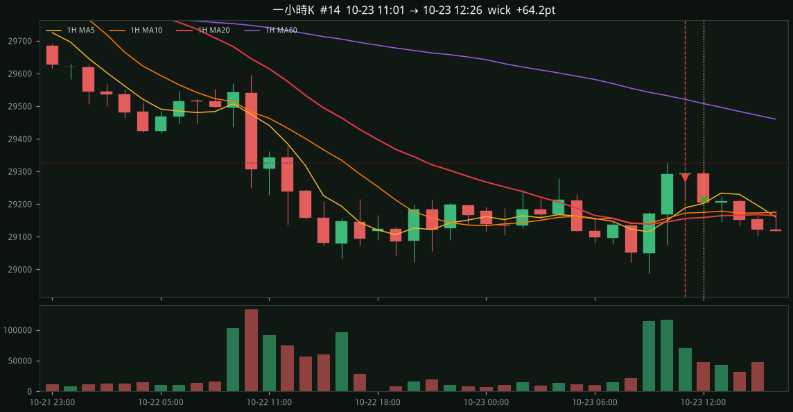
ma2001m1h峰距 169
entry 29307.75
stop 29345.00 （風險 37.2 pts）
exit 29192.25 ma200
4H高 29345.00 @ 10-25 18:45 MA200當時 29176.05
回測MA10 @ 10-25 18:50
進場 MA5 29321.4 / MA10 29324.7 / MA20 29310.2
MA60 29250.3 / MA200 29180.9
1H 29117.75 / 1H MA20 29164.22
一小時K（整點對齊，完整小時棒）
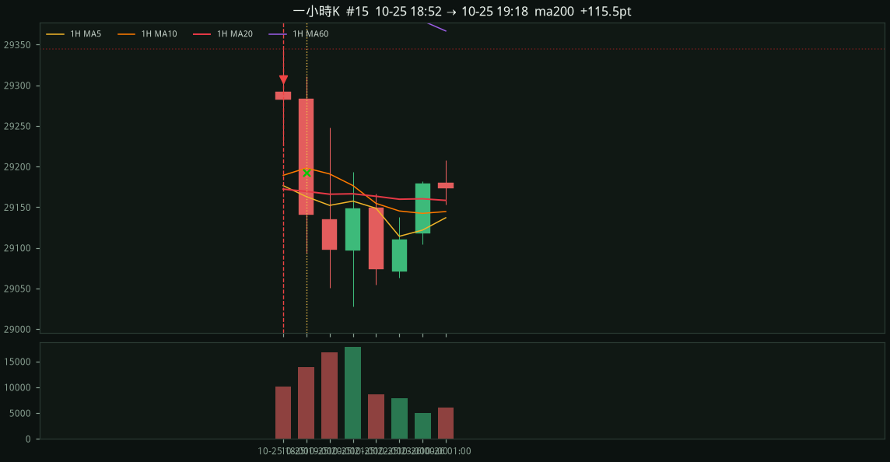
wick1m1h峰距 267
entry 29522.25
stop 29572.00 （風險 49.8 pts）
exit 29430.50 wick
4H高 29572.00 @ 10-26 11:02 MA200當時 29304.59
回測MA10 @ 10-26 11:04
進場 MA5 29532.7 / MA10 29541.3 / MA20 29523.7
MA60 29414.0 / MA200 29315.9
1H 29521.75 / 1H MA20 29176.29
一小時K（整點對齊，完整小時棒）
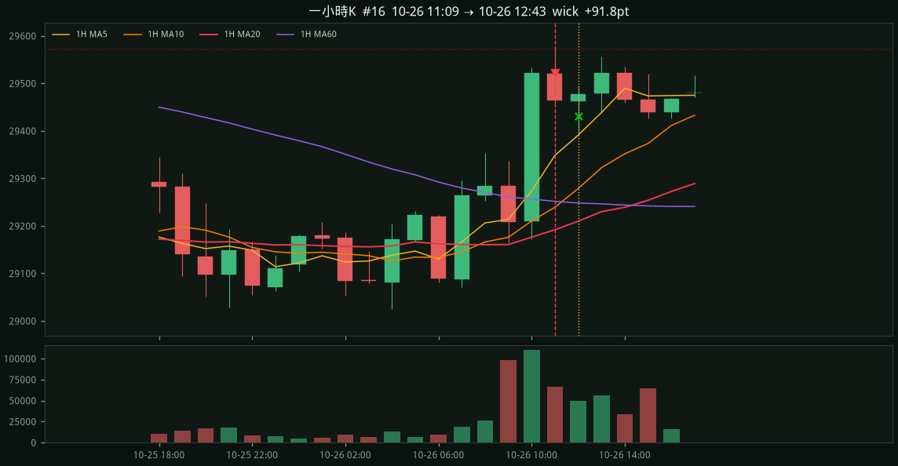
stop1m1h峰距 119
entry 29431.50
stop 29471.25 （風險 39.8 pts）
exit 29471.25 stop
4H高 29471.25 @ 10-27 05:08 MA200當時 29352.16
回測MA10 @ 10-27 05:12
進場 MA5 29452.3 / MA10 29452.8 / MA20 29438.1
MA60 29398.4 / MA200 29354.7
1H 29432.75 / 1H MA20 29433.62
一小時K（整點對齊，完整小時棒）
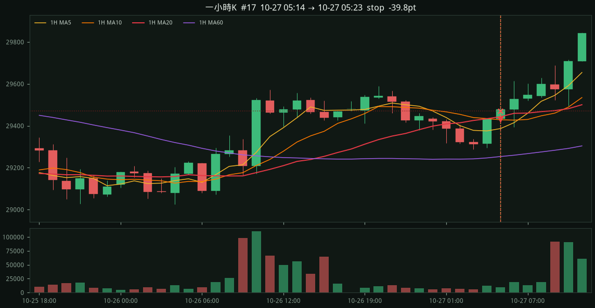
wick1m1h峰距 102
entry 29459.50
stop 29479.00 （風險 19.5 pts）
exit 29404.00 wick
4H高 29479.00 @ 10-27 05:59 MA200當時 29377.14
回測MA10 @ 10-27 06:01
進場 MA5 29469.5 / MA10 29470.2 / MA20 29464.0
MA60 29455.6 / MA200 29379.0
1H 29478.25 / 1H MA20 29443.38
一小時K（整點對齊，完整小時棒）
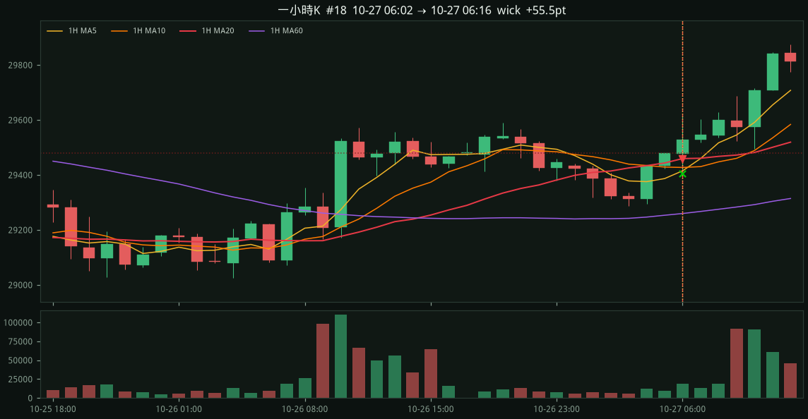
stop1m1h峰距 206
entry 29569.50
stop 29613.00 （風險 43.5 pts）
exit 29613.00 stop
4H高 29613.00 @ 10-27 06:47 MA200當時 29406.80
回測MA10 @ 10-27 06:48
進場 MA5 29588.2 / MA10 29591.7 / MA20 29570.6
MA60 29496.2 / MA200 29438.6
1H 29527.25 / 1H MA20 29459.31
一小時K（整點對齊，完整小時棒）
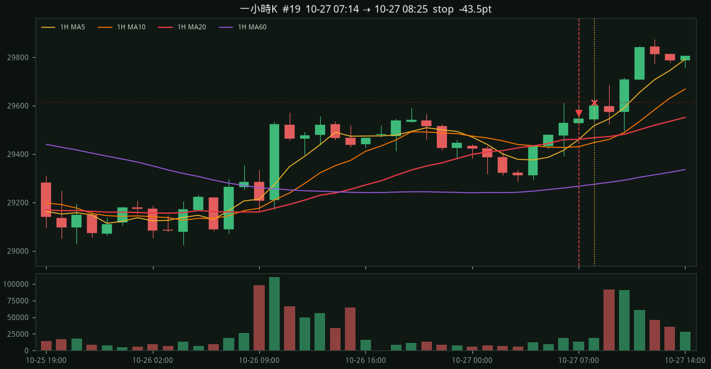
ma2001m1h峰距 229
entry 29841.00
stop 29875.50 （風險 34.5 pts）
exit 29780.25 ma200
4H高 29875.50 @ 10-27 12:00 MA200當時 29646.78
回測MA10 @ 10-27 12:06
進場 MA5 29848.9 / MA10 29851.7 / MA20 29843.2
MA60 29793.2 / MA200 29659.6
1H 29842.25 / 1H MA20 29500.40
一小時K（整點對齊，完整小時棒）
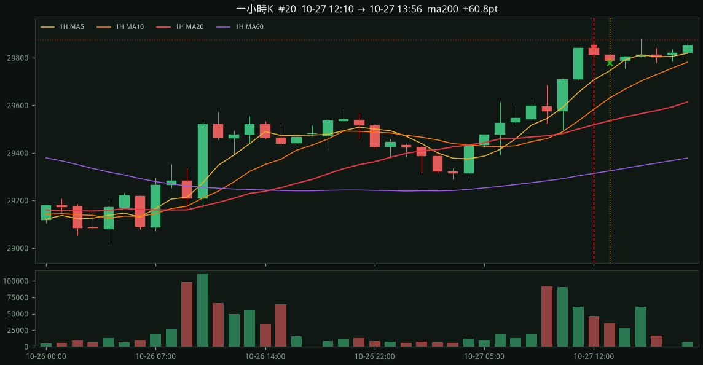
wick1m1h峰距 158
entry 29903.75
stop 30009.00 （風險 105.2 pts）
exit 29886.50 wick
4H高 30009.00 @ 10-28 14:43 MA200當時 29850.66
回測MA10 @ 10-28 14:44
進場 MA5 29963.2 / MA10 29955.0 / MA20 29909.9
MA60 29860.6 / MA200 29851.5
1H 29864.25 / 1H MA20 29892.84
一小時K（整點對齊，完整小時棒）
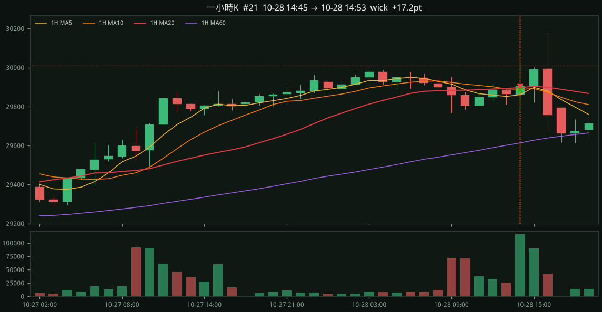
wick1m1h峰距 189
entry 29727.75
stop 29764.25 （風險 36.5 pts）
exit 29648.00 wick
4H高 29764.25 @ 10-29 01:19 MA200當時 29575.25
回測MA10 @ 10-29 01:20
進場 MA5 29734.6 / MA10 29741.3 / MA20 29730.3
MA60 29659.7 / MA200 29581.0
1H 29642.00 / 1H MA20 29798.26
一小時K（整點對齊，完整小時棒）
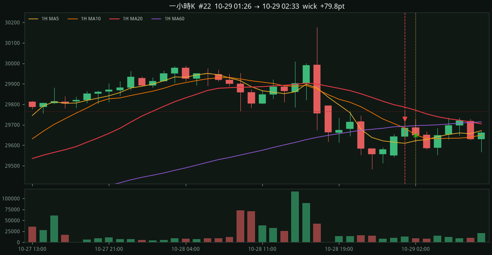
ma2001m1h峰距 138
entry 28388.00
stop 28443.50 （風險 55.5 pts）
exit 28323.50 ma200
4H高 28443.50 @ 11-03 11:04 MA200當時 28305.27
回測MA10 @ 11-03 11:05
進場 MA5 28407.8 / MA10 28417.1 / MA20 28400.6
MA60 28355.3 / MA200 28310.9
1H 28417.50 / 1H MA20 28213.51
一小時K（整點對齊，完整小時棒）
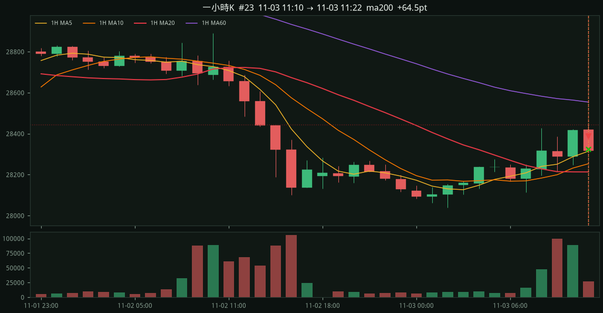